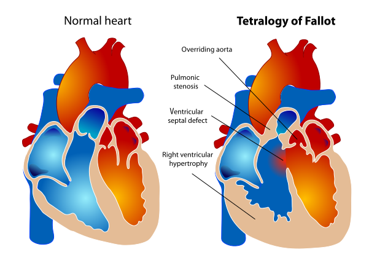
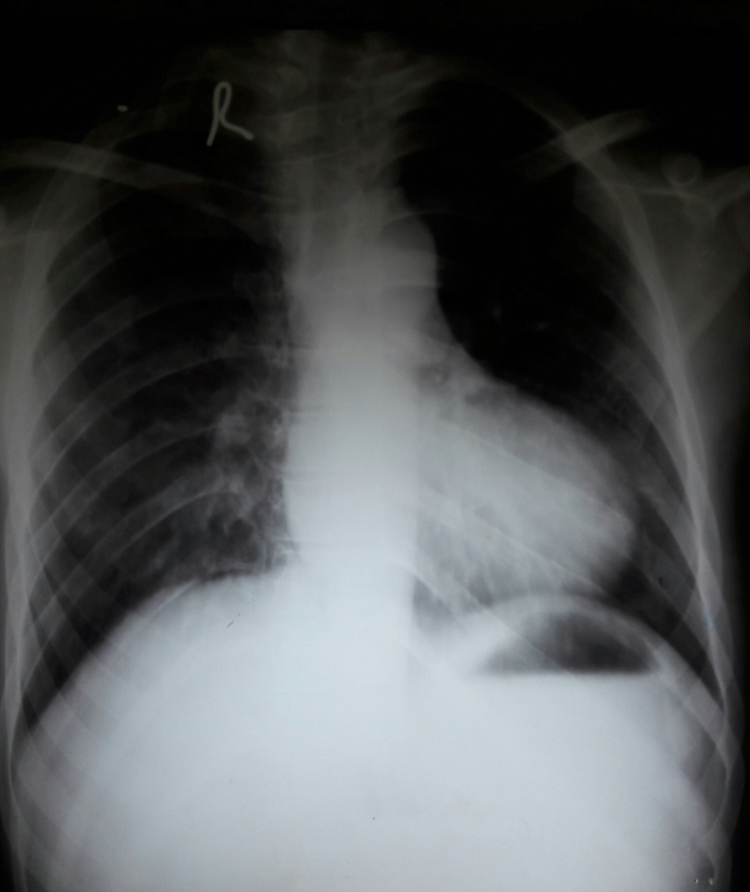
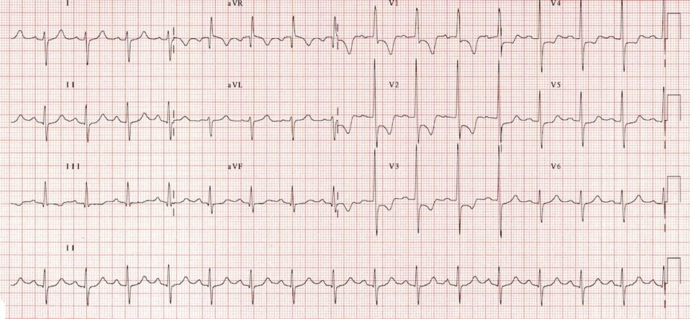

TETRALOGY OF FALLOT
ED DECISION DASHBOARD
CHAPTER 129
Tintinalli 9e
pp. 821-825
pp. 821-825
High-risk cyanotic congenital heart disease
Tet spell = hypercyanotic episode
Goal: improve oxygenation, preload, pulmonary blood flow, and SVR
Tetralogy of Fallot - Pathophysiology
1Large VSDNonrestrictive ventricular septal defect equalizes RV and LV systolic pressures.
2RVOT obstructionValvular, supravalvular, or infundibular pulmonary stenosis limits pulmonary blood flow.

3Overriding aortaAorta receives blood from both ventricles across the septal defect.
4RV hypertrophyChronic pressure load from outflow obstruction thickens the right ventricle.
Tet Spell Mechanism: Vicious Cycle
Increased RVOT obstruction Low preload, low SVR, infundibular spasm, agitation, acidosis
↓
Increased right ventricular pressure
↓
Increased right-to-left shunt across VSD
↓
Hypoxemia + acidosis
↓
Pulmonary vasoconstriction increases PVR
↓
Worse RVOT obstruction + R-to-L shunt = worsening hypoxemia
Diagnostic Clues
Chest X-ray

- Boot-shaped heart, "coeur en sabot"
- Normal-sized heart in classic TOF
- Decreased pulmonary vascular markings
ECG

- Right axis deviation
- Right ventricular hypertrophy
- Use age-appropriate pediatric ECG norms
Common Triggers
Crying
Fever
Dehydration
Anemia
Pain
Agitation
Physiology Pearls
- Severity of cyanosis tracks with the degree of RVOT obstruction.
- Knee-chest increases venous return and SVR, reducing R-to-L shunt.
- Oxygen treats hypoxia and promotes pulmonary vasodilation, but cyanotic CHD may not fully correct with oxygen.
- Acyanotic or "pink" TOF can occur when pulmonary stenosis is mild and shunt is left-to-right.
Differential Diagnosis
- Breath-holding spells
- Sepsis or severe pneumonia
- Asthma/status asthmaticus
- Foreign body aspiration
- Methemoglobinemia
- Transposition, TAPVR, tricuspid atresia, truncus arteriosus
Key Points to Remember
- Tet spell is acute R-to-L shunting through VSD, usually from worsened RVOT obstruction.
- Treat physiology: increase preload, increase SVR, reduce RVOT obstruction, reduce PVR, correct acidosis.
- Hyperoxia test: poor PaO2 rise with 100% oxygen supports cardiac mixing or R-to-L shunt.
- Early cardiology involvement improves safety; definitive therapy is surgical repair.
Sources & Image Credit
- Core text: Tintinalli's Emergency Medicine, 9e, Ch.129, pp. 821-825.
- Anatomy: Wikimedia Commons TOF educational diagram.
- CXR: Wikimedia Commons boot-shaped heart image.
- ECG: LITFL ECG Library RVH example.
- Cross-check: MSD/Merck Manual Professional TOF overview.